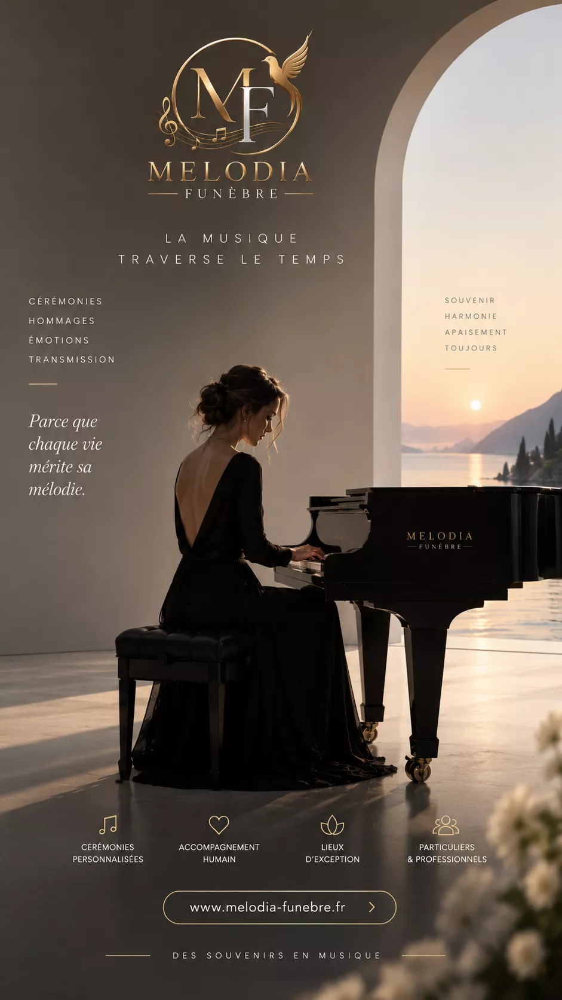
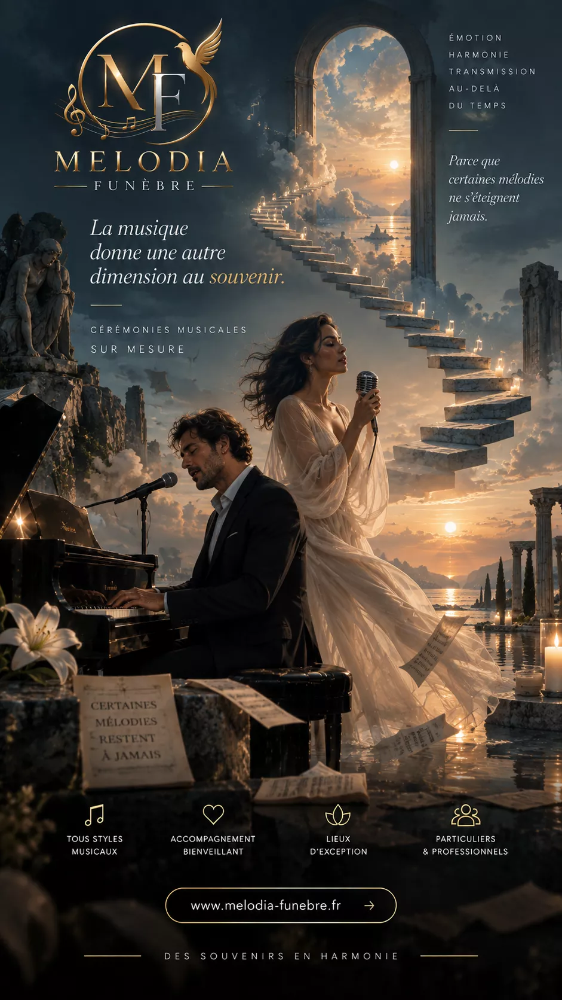
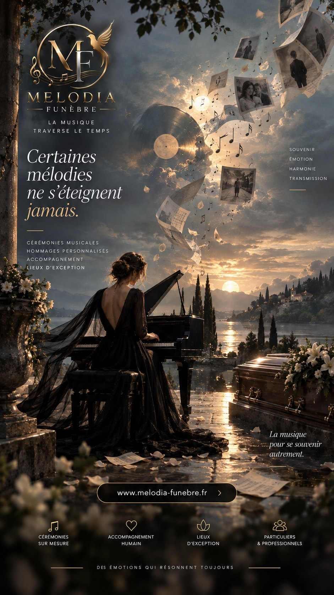
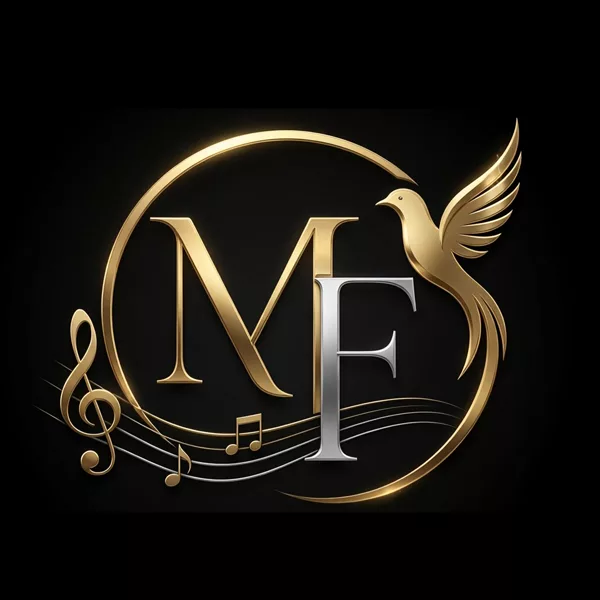

Melodia Funèbre
Des hommages en musique
Pour les pompes funèbres
Une nouvelle expérience d’hommage
pour les familles que vous accompagnez.
Une œuvre musicale composée pour leur défunt, à partir de ce qu’elles racontent de lui. Livrée en vingt-quatre heures, diffusée en cérémonie, prolongée par une page de souvenir et son QR code. Vous présentez, nous faisons tout le reste.
60 %Marge agence
0 €Investissement
24 hLivraison
5 minBrief famille
Ce que vit la famille
Quatre étapes,
et rien à porter.
Aux obsèques, la musique n’a presque jamais connu le défunt. Ici, la salle entend son prénom, son métier, ses manies : une chanson écrite pour lui, et pour personne d’autre.
La famille raconte son histoire
Un entretien de cinq minutes, au téléphone ou dans vos bureaux. Son prénom, trois traits de caractère, son métier, une habitude. Rien de plus.
Melodia Funèbre crée l’hommage
Paroles écrites pour elle seule, musique composée dans le style choisi. Livré en vingt-quatre heures, révisé jusqu’à ce que la famille s’y reconnaisse.
Elle reçoit sa mélodie et sa page hommage
Le fichier à garder, et une page en ligne avec le portrait, les dates, les paroles et le lecteur. À partager avec ceux qui n’ont pas pu venir.
Le QR code permet de retrouver l’hommage
Gravé sur une plaque que votre agence réalise. On le scanne sur le lieu de repos, et la musique se met à jouer, là, devant elle.

Melodia Funèbre · Des hommages en musique02
L’intérêt pour votre agence
Pourquoi proposer
Melodia Funèbre ?
Trois agences se partagent souvent la même ville et le même catalogue. Celle qui fait entendre une chanson écrite pour le défunt devient celle qu’on recommande à la sortie.
♪
Une expérience mémorable
Transformez un hommage en souvenir musical durable. La famille repart avec une œuvre, pas avec un souvenir qui s’efface.
◈
Un service différenciant
Proposez une expérience que les autres agences ne proposent pas. Nous limitons volontairement le nombre de partenaires par bassin de population.
✧
Simple pour vos équipes
Aucune production musicale à gérer. Un brief de cinq minutes, ou un simple contact transmis, et nous nous occupons du reste.
✎
Une solution personnalisée
Chaque hommage est créé autour de l’histoire du défunt : son métier, ses gestes, ses habitudes, ce que sa famille raconte de lui.
◷
Un souvenir qui reste
La famille conserve la musique et retrouve l’hommage dans le temps. Un anniversaire, une Toussaint : l’œuvre est toujours là.
▦
Une expérience digitale
Un espace partenaire pour saisir le brief en trois minutes, suivre l’avancement et faire écouter le catalogue en rendez-vous.
Aucun travail de productionEntretien, écriture, composition, mixage, relecture humaine, livraison : tout est de notre côté.
Aucun risque commercialSi la famille refuse l’œuvre malgré nos reprises, elle n’est pas facturée — et votre agence n’avance rien.
Zéro droit SACEMŒuvres originales, droits d’usage à vie : diffusion libre en cérémonie et en ligne.
Melodia Funèbre · Des hommages en musique03
Offres et rémunération
Trois offres,
60 % pour votre agence.
Vous conservez 60 % du montant payé par la famille. Aucun investissement, aucun stock, aucun abonnement, aucun minimum. Facture récapitulative mensuelle.
Essentiel
149 €
Votre marge : 89,40 €
- Œuvre originale de 2 à 3 min
- Entretien de 5 minutes
- Paroles biographiques uniques
- Livraison sous 24 h
- MP3 320 kbps, droits à vie
Le plus choisi
Prestige
299 €
Votre marge : 179,40 €
- Tout Essentiel
- Deux versions au choix
- Une révision offerte
- Version instrumentale seule
- Paroles imprimables, WAV sur demande
Mémorial
499 €
Votre marge : 299,40 €
- Tout Prestige
- Mini-album de trois titres
- Révisions illimitées
- Livret souvenir imprimé
- Urgence 6 h incluse, accompagnement du fondateur
Exemple d’agence20 obsèquespar mois · offre Prestige
Hommages5par mois
Marge nette897 €par mois
Marge nette10 764 €par an

Estimation indicative : une famille sur quatre retient l’hommage lorsqu’il lui est présenté. Ne constitue pas un engagement contractuel. Simulez votre activité sur melodia-funebre.fr/professionnels. Prix payés par la famille, TVA non applicable (art. 293 B du CGI).
Melodia Funèbre · Des hommages en musique04
Le code mémoriel
L’hommage ne s’arrête pas
à la cérémonie.
Un QR code permet à la famille de retrouver la musique, les souvenirs et la page hommage — des années plus tard.
La plaque
Gravée par votre marbrier, ou simplement posée. Le code tient dans quatre centimètres.
Le QR code
Scanné avec l’appareil photo du téléphone. Aucune application à installer.
La page de souvenir
Son nom, ses dates, les mots de la famille et jusqu’à cinq photos.
Sa musique
L’œuvre se lance. Celle qui a été écrite pour lui, et pour personne d’autre.
Essayez maintenant
Scannez ce code avec votre téléphone.
Vous arriverez sur une vraie page de souvenir, telle qu’une famille la publie. Aucune application, aucun compte : l’appareil photo suffit.
melodia-funebre.fr/m/demo
Melodia Funèbre · Des hommages en musique05
Le partenariat
Vingt minutes
pour démarrer.
Six étapes, et rien à signer avant la première œuvre. Le partenariat commence par un accord, pas par un contrat de distribution.
- Vous créez votre compte partenaire
Trois minutes, aucune pièce justificative à ce stade.
3 minutes
- Vous recevez le kit de présentation
Une plaquette pour les familles, un argumentaire court et les hommages de démonstration.
Immédiat
- Votre première œuvre est offerte
Sur la prochaine famille qui la demande : vous présentez un hommage réel, pas une promesse.
24 heures
- Vous présentez, la famille décide
« Nous pouvons faire composer une chanson originale pour lui, livrée avant la cérémonie. » Puis vous faites écouter.
30 secondes
- Vous saisissez le brief, ou vous nous passez le relais
Depuis votre espace, ou nous menons l’entretien en votre nom.
3 minutes
- Vous encaissez votre marge
Vous conservez 60 %, nous facturons les 40 % restants. Sans minimum ni engagement de durée.
Mensuel
Qui parle à la famille ?Vous restez son interlocuteur. Vous saisissez le brief, ou nous menons l’entretien de cinq minutes à votre place.
Et si la famille n’est pas satisfaite ?Nous reprenons la composition à nos frais. Le risque commercial est intégralement de notre côté.
Faut-il avancer de l’argent ?Non. Vous ne payez que sur les hommages effectivement commandés par vos familles.
Une exclusivité territoriale ?Le nombre d’agences par bassin est limité. Demandez la disponibilité de votre secteur.
Melodia Funèbre · Des hommages en musique06

Prochaine étape
Parlons de
votre agence.
Demandez une démonstration : vous écoutez de vraies œuvres, vous voyez l’espace partenaire, et vous décidez ensuite.
Votre première composition est offerte

Melodia Funèbre · Maison française de composition d’hommages musicaux · Des voix pour ceux qui restent